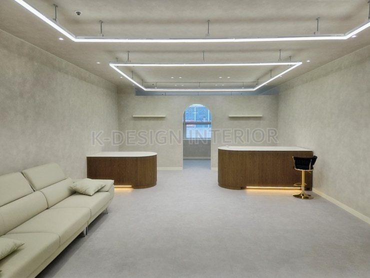

충남 당진 읍내동
읍내동
상업공간 인테리어
당진 읍내동에서 가게를 준비하는 사장님께, 케이디자인은 업종별로 꼭 필요한 공사와 줄여도 되는 공사를 나눠 설명해 드립니다.

당진 읍내동 상업공간 인테리어
당진은 시청 주변 시내 지역과 송악읍·합덕읍 같은 읍 지역으로 나뉘며, 아파트와 단독주택, 상가가 고루 있는 도시입니다.
읍내동 상가 건물은 층과 위치에 따라 손님이 들어오는 방식이 다릅니다. 1층 매장은 외관과 입구를, 2층 이상 매장은 간판과 내부 분위기를 더 신경 써서 설계합니다.
당진 읍내동 상가 인테리어, 철거부터 전기·설비, 조명, 마감, 외관까지 한 번에 맡길 수 있습니다. 업종에 필요한 설비와 손님이 머무는 공간을 함께 설계합니다.
읍내동에서 맡길 수 있는 공사
읍내동 현장 상황을 보고 꼭 필요한 공사부터 제안합니다.
- 학원, 병원
- 사무실
- 상가, 매장
- 외관 리모델링
- 카페, 음식점
- 헤어샵, 뷰티샵
- 필라테스 스튜디오
- 공정 공유공정이 끝날 때마다 사진과 함께 다음 일정을 알려드립니다.
- 한 팀이 끝까지디자인 따로, 시공 따로 맡기지 않아도 됩니다.
- 가까운 시공 지역멀리서 오는 업체가 아니라 당진 인근에서 일하는 업체입니다.
읍내동 상업공간 인테리어, 이렇게 준비하세요
당진 읍내동 현장을 상담할 때 함께 확인하는 내용입니다.
손님 동선과 좌석 배치
좌석을 많이 넣는 것보다 손님과 직원이 부딪히지 않는 배치가 중요합니다. 평면을 그릴 때 두 동선을 함께 검토합니다.
조명으로 분위기 만들기
사진이 잘 나오는 매장은 대부분 조명이 좋습니다. 간접조명과 포인트 조명을 나눠 배치해 손님이 머무는 자리를 돋보이게 합니다.
업종에 맞는 설비부터 확인
읍내동에서 카페나 음식점을 준비한다면 전기 용량, 급수·배수 위치, 주방 환기 덕트 경로를 먼저 확인해야 합니다. 케이디자인은 실측 단계에서 이 부분을 함께 점검합니다.
소방·안전 기준 검토
읍내동 매장도 업종과 면적에 따라 소방 설비 기준이 달라질 수 있습니다. 설계할 때 함께 검토해 영업 신고에 문제가 없도록 준비합니다.
건물 공사 규정 확인
상가 건물마다 공사 가능 시간, 소음 규정, 외부 간판 규정이 다릅니다. 읍내동 현장도 착공 전 관리단 규정을 확인하고 일정에 반영합니다.
직접 설계·시공한 상업공간
사진을 누르면 크게 볼 수 있습니다.
상담 라운지
원목 카운터, 아치 창한식당
간접조명 진열장음식점
레드 포인트 벽, 통창매장 라운지
벽돌 타일 카운터, 벤치헤어·뷰티샵
원형 거울, 원목 카운터백석동 미용실
노출 천장, 라인 조명, 스타일링 존공사 순서 한눈에 보기
각 단계마다 확인할 내용을 먼저 안내합니다.
전화 상담
원하는 공간, 예산, 일정을 들려주세요.
현장 실측
대표가 읍내동 현장을 직접 재고 설비 상태를 봅니다.
디자인과 견적
공정별로 나눈 견적과 디자인 시안을 안내합니다.
시공
공정이 바뀔 때마다 사진으로 알려드립니다.
완공과 점검
마감 상태를 같이 둘러보고 인도합니다.
자주 묻는 질문
읍내동 상가 인테리어도 시공하나요?
네. 당진 읍내동 상가, 카페, 음식점, 사무실 등 상업공간 인테리어를 설계부터 시공까지 진행합니다.
어떤 업종의 매장을 시공했나요?
음식점과 카페, 헤어·뷰티샵, 운동 스튜디오, 상담 라운지까지 여러 업종을 시공했습니다.
영업 중인 매장도 부분 리모델링이 되나요?
네. 읍내동 매장 영업 일정에 맞춰 휴무일이나 영업 후 시간에 공정을 나눠 진행할 수 있습니다.
읍내동 카페 인테리어도 가능한가요?
네. 카페 카운터, 좌석 배치, 조명, 외관까지 설계하고 시공합니다. 시공 사례의 카페 사진을 참고해 보세요.
상가 인테리어 상담 때 무엇을 준비하면 좋나요?
읍내동 매장의 업종과 평수, 오픈 희망일을 알려주세요. 참고 매장 사진이 있으면 상담이 빨라집니다.
- 상호
- 케이디자인
- 대표
- 김명구
- 시공 분야
- 주거공간, 상업공간 인테리어
- 시공 지역
- 충남 천안, 아산, 당진 / 경기 평택